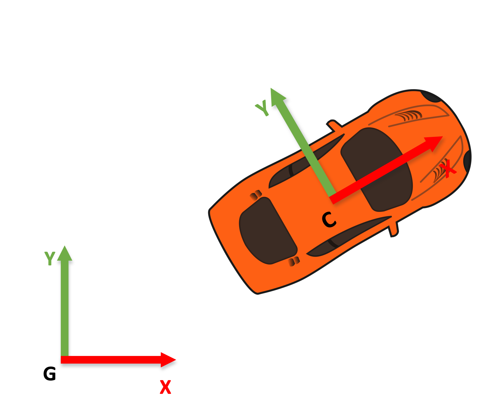
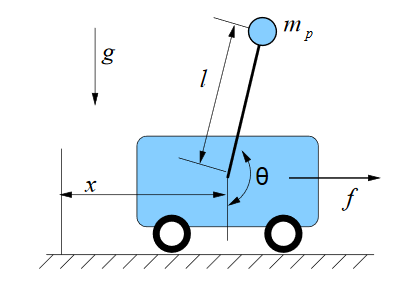
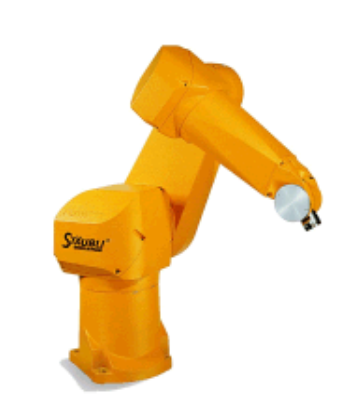

Main ambiguities of quaternion representation
- The ones inherited from the axis-angle representation, but also:
Week #2: Kinematics and Dynamics
Today’s slides borrow parts of Paul Furgale’s “Representing robot pose” presentation:
http://paulfurgale.info/news/2014/6/9/representing-robot-pose-the-good-the-bad-and-the-ugly
You should absolutely read it.
• Frames of reference
• Ways to represent rotations
• Simplified models of vehicles
• Forward and inverse kinematics

Unless otherwise specified,
we use right-handed
frames in robotics
Because we want to reason and express quantities relative to their local configuration.
For example: “grab the bottle behind the cereal bowl”
This lecture is about defining and representing frames of reference and reasoning about how to express quantities in one frame to quantities in the other.
Motion that can be described by a rotation and translation.
All the parts making up the body move in unison, and there are no deformations.
Representing rotations, translations, and vectors in a given frame of reference is often a source of frustration and bugs in robot software because there are so many options.
Color convention
for frames
Moving body (robot) frame
Fixed world frame
G, the global frame of reference is fixed, i.e. with zero velocity in our previous example.
But, in general it can move as long as it has zero acceleration. Such a frame is called an “inertial” frame of reference.
Newton’s laws hold for inertial reference frames only. For reference frames with non-constant velocity we need the theory of General Relativity.
So, make sure that your global frame of reference is inertial, preferably fixed.
Ways to represent rotations
Simplified models of vehicles
Forward and inverse kinematics
Need to specify the axes which each angle refers to.
There are 12 different valid combinations of fundamental rotations. Here are the possible axes:
z-x-z, x-y-x, y-z-y, z-y-z, x-z-x, y-x-y
x-y-z, y-z-x, z-y-x, x-z-y, z-y-x, y-x-z
Simple rotations can be counter-clockwise or clockwise. This gives another 2 possibilities.
\[ \mathbf{R}_z(\alpha) := \begin{bmatrix} \cos\alpha & -\sin\alpha & 0 \\ \sin\alpha & \cos\alpha & 0 \\ 0 & 0 & 1 \end{bmatrix} \qquad \mathbf{C}_z(\alpha) := \begin{bmatrix} \cos\alpha & \sin\alpha & 0 \\ -\sin\alpha & \cos\alpha & 0 \\ 0 & 0 & 1 \end{bmatrix} \]
You need to specify whether the rotation rotates from the world frame to the body frame, or the other way around.
Another 2 possibilities. More possibilities if you have more frames.
Degrees or radians? Another 2 possibilities
Need to specify the ordering of the three parameters.
1-2-3, 1-3-2, 2-1-3, 2-3-1, 3-1-2, 3-2-1
Another 6 different valid combinations
Why should roboticists care about this?
Because when it happens Euler angle representations lose one degree of freedom.
They cannot represent the entire range of rotations any more.
They get “locked” into a subset of the space of possible rotations.
4-number representation (angle, 3D axis)
2 ambiguities: (-angle, -axis) is the same as (angle, axis)
The royalty of rotation representations
3x3-number representation, very redundant
No ambiguities, as long as source frame and target frame are specified correctly. For example, define your notation this way:
Rotation from Body frame to World frame: \(\mathbf{R}_{BW}\)
Or you can define it this way: \(_B^W \mathbf{R}\)
\[ _B^W\mathbf{R}^{-1} = _B^W\mathbf{R}^t = _W^B\mathbf{R} \]
Rotation matrices are orthogonal matrices: their transpose is their inverse and they do not change the length of a vector, they just rotate it in space.
\[{}^W_B\mathbf{R}^{t} {}^W_B\mathbf{R} = \mathbf{I}\]
\[ \mathbf{R} = \mathbf{I}\cos\theta + (1 - \cos\theta)\mathbf{v}\mathbf{v}^t + [\mathbf{v}]_\times \]
Where I is the 3x3 identity and \[[\mathbf{a}]_\times \stackrel{\text{def}}{=} \begin{bmatrix} 0 & -a_3 & a_2 \\ a_3 & 0 & -a_1 \\ -a_2 & a_1 & 0 \end{bmatrix}\]
This is called the “Rodrigues formula”
\[ _C^D\mathbf{R} = \begin{bmatrix} 0 & 1 & 0 \\ 0 & 0 & 1 \\ 1 & 0 & 0 \end{bmatrix} \]
This matrix transforms the x-axis of frame C to the z-axis of frame D. Same for y and z axes.
In 2D adding angles with wraparound at 360 degrees is a valid operation.
Rotation matrices can be added, but the result is not necessarily a valid rotation. Rotations are not closed under the operation of addition.
Rotations are closed under the operation of multiplication. To compose a sequence of simple rotations we need to multiply them.
\[ _C^E \mathbf{R} = _D^E \mathbf{R} _C^D \mathbf{R} \]
Based on axis-angle representation, but more computationally efficient.
The main workhorse of rotation representations.
Used almost everywhere in robotics, aerospace, aviation.
Very important to master in this course. You will need it for the first assignment and for working with ROS in general.
\[ \mathbf{q} = [\sin(\theta/2)v_1, \sin(\theta/2)v_2, \sin(\theta/2)v_3, \cos(\theta/2)] \]
\[\mathbf{q} = x\mathbf{i} + y\mathbf{j} + z\mathbf{k} + w\]
\[ \mathbf{q} = [0, 0, \sin(\pi / 4)v_3, cos(\pi / 4)] \]
Defined algebraically by
\[ \begin{align} Q = q_0 + q_1i + q_2j q_sk \\ i^2 = j^2 = k^2 = ijk = -1 \\ ij = k, jk = i, ki = j \end{align} \]
and usually denoted by the circular cross symbol. For example:
\[ _F^W\mathbf{q} = _C^W\mathbf{q} \otimes {} _F^C\mathbf{q} \]
\[{}^W_F\mathbf{q} = {}^W_C\mathbf{q} \otimes {}^C_F\mathbf{q}\]
Direct correspondence with matrix multiplication:
\[ _F^W\mathbf{R(q)} = _C^W\mathbf{R(q)} _F^C\mathbf{R(q)} \]
NOTE: the quaternion to matrix conversion will not be given here.
It is usually present in all numerical algebra libraries. At the moment we’ll take it for granted.
\[ \mathbf{q}^{-1} = -x\mathbf{i} - y\mathbf{j} -z\mathbf{k} + w \]
\[ [0,0,0,1] = \mathbf{q}^{-1} \otimes \mathbf{q} \]
Direct correspondence with matrix inversion: \[ \mathbf{I} = \mathbf{R(q^{-1})R(q)} \]
\[ \mathbf{I} = \mathbf{R(q)^{-1} R(q)} \]
If the angular velocity of the Body frame is \(^Bw\) and the body-to-world rotation at time t is \(_B^W\mathbf{q}(t)\)
Then, at time t+dt the new body-to-world rotation will be \[{}^W_{B(t+dt)}\mathbf{q} = {}^W_{B(t)}\mathbf{q} \otimes {}^{B(t)}_{B(t+dt)}\mathbf{q}\]
where \({}^{B(t)}_{B(t+dt)}\mathbf{q}\) has unit axis \(\frac{{}^B\omega}{||{}^B\omega||}\) and angle \(||{}^B\omega|| dt\)
Frame diagram
Full description of how to build a transformation matrix from the provided scalars and down to the scalar level.
A clear statement of which transformation matrix it is.

Choose an expressive coding style.
Explain it clearly.
Stick with it.
Suppose you have a vector in frame A, and a vector in frame B
You want to find a quaternion that transforms \(^A\mathbf{v}\) to \(^B\mathbf{v}\)
Idea: use axis-angle and convert it to quaternion
Can rotate from \(^A\mathbf{v}\) to \(^B\mathbf{v}\) along an axis that is perpendicular to both of them. How do we find that?
\[ \mathbf{a} \times \mathbf{b} = ||\mathbf{a}|| ||\mathbf{b}|| \sin(\theta) \mathbf{n} \]
\(\mathbf{v}_\text{rot axis} = ^A\mathbf{v} \times ^B\mathbf{v}\) is perpendicular to both of them
\(\theta_{\text{rot angle}} = \text{acos}(^A\mathbf{v} \cdot ^B\mathbf{v})\)
Assuming the two vectors are unit length
Let \(^A\mathbf{v}\) be given and a quaternion \(_A^B\mathbf{q}\)
To obtain \(^B\mathbf{v}\) you have two choices:
Either use the rotation matrix \(^B\mathbf{v} = _A^B\mathbf{R(q)} ^A\mathbf{v}\)
Or use quaternion multiplication directly
\[ [^B\mathbf{v}, 0] = _A^B\mathbf{q} \otimes [^A\mathbf{v}, 0] \otimes _B^A\mathbf{q} \]
\[{}^W\mathbf{p} = {}^W_B\mathbf{R} {}^B\mathbf{p} + {}^W\mathbf{t}_{WB} \qquad {}^W\mathbf{p} = {}^W_B\mathbf{R}({}^B\mathbf{p} - {}^B\mathbf{t}_{BW})\]
\[ ^W\mathbf{v} = _B^W\mathbf{R} ^B_\mathbf{v} \]
\[ _B^W\mathbf{T} = \begin{bmatrix} _B^W\mathbf{R} & ^W\mathbf{t}_{WB} \\ 0 & 1 \\ \end{bmatrix} \]
\[ _B^W\mathbf{T} = _A^W\mathbf{T} _B^A\mathbf{T} \]
Composing rigid motions now becomes a series of matrix multiplications
\[ _B^W\mathbf{T}^{-1} \neq _A^W\mathbf{T}^t \]
as was the case with rotation matrices.
Frames of reference
Ways to represent rotations
Simplified models of vehicles
Forward and inverse kinematics
“All models are wrong, but some are useful” – George Box (statistician)
Model: a function that describes a physical phenomenon or a system, i.e. how a set of input variables cause a set of output variables.
Models are useful if they can predict reality up to some degree .
Mismatch between model prediction and reality = error / noise
Anything that we do not bother modelling with our model
Example 1: “assume frictionless surface”
Example 2: Taylor series expansion (only first few terms are dominant)
With models, can be thought of as approximation error.
Omnidirectional motion
Dubins car
Differential drive steering
Ackerman steering
Unicycle
Cartpole
Quadcopter
State := Configuration := \(\mathbf{X}\) := vector of physical quantities of interest about the system
\[ \mathbf{X} = [^Gp_x, ^Gp_y, ^G\theta] \]
State = [Position, Orientation]
Position of the robot’s frame of reference C with respect to a fixed frame of reference G, expressed in coordinates of frame G. Angle is the orientation of frame C with respect to frame G.
Control := \(\mathbf{u}\) := a vector of input commands that can modify the state of the system
\[ \mathbf{u} = [^Cv_x, ^Cv_y, ^Cw_z] \]
Control = [Linear velocity, Angular velocity]
Linear and angular velocity of the robot’s frame of reference C with respect to a fixed frame of reference G, expressed in coordinates of frame C.
Dynamical System : = Dynamics := a function that describes the time evolution of the state in response to a control signal
Continuous case:
\[ \begin{align} \frac{dx}{dt} &= \dot{x} = f(x, u) \\ \dot{p}_x &= v_x \\ \dot{p}_y &= v_y \\ \dot{\theta} &= \omega_z \end{align} \]
Note: reference frames have been removed for readability.
State = [Position and orientation]
Position of the car’s frame of reference C with respect to a fixed frame of reference G, expressed in frame G.
The angle is the orientation of frame C with respect to G.
\[ \mathbf{x} = [^Gp_x, ^Gp_y, ^G\theta] \]
Controls = [Forward speed and angular velocity]
Linear velocity and angular velocity of the car’s frame of reference C with respect to a fixed frame of reference G, expressed in coordinates of C.
\[ \mathbf{u} = [^Cv_x, ^Cw_z] \]

\[ \begin{align} \dot{p}_x &= v_x \cos(\theta) \\ \dot{p}_y &= v_x \sin(\theta) \\ \dot{\theta} &= \omega_z \end{align} \]
Note: reference frames have been removed for readability.
Kinematics considers models of locomotion independently of external forces and control.
For example, it describes how the speed of a car affects the state without considering what the required control commands required to generate those speeds are.
Dynamics considers models of locomotion as functions of their control inputs and state.
Can only go forward
Constant speed
\[ ^Cv_x = \text{const} > 0 \]
Can only go forward
Constant speed
\[ ^Cv_x = \text{const} > 0 \]
The path of the car can be decomposed to L(eft), R(ight), S(traight) segments.
RSR path

IC = Instantaneous Center of Rotation
The center of the circle circumscribed by the turning path.
Undefined for straight path segments.
Why do we care about a car that can only go forward?
Because we can also model idealized airplanes and boats
Dubins boat = Dubins car
Pitch angle \(\phi\) and forward velocity determine descent rate
Yaw angle \(\theta\) and forward velocity determine turning rate
\[ \begin{align} \dot{p}_x &= v_x \cos(\theta) \sin(\phi) \\ \dot{p}_y &= v_x \sin(\theta) \sin(\phi) \\ \dot{p}_z &= v_x \cos(\phi) \\ \dot{\theta} &= \omega_z \\ \dot{\phi} &= \omega_y \end{align} \]
\(\theta\) is yaw
\(\phi\) is pitch
Top view of a unicycle
\[ \mathbf{x} = [^Gp_x, ^Gp_y, ^G\theta] \]
State = [Position, Orientation]
Position of the unicycle’s frame of reference U with respect to a fixed frame of reference G, expressed in coordinates of frame G. Angle is the orientation of frame U with respect to frame G.
Q: Would you put the radius of the unicycle to be part of the state?
A: Most likely not, because it is a constant quantity that we can measure beforehand. But, if we couldn’t measure it, we need to make it part of the state in order to estimate it.
\[ \mathbf{u} = [^Uw_z, ^Uw_y] \]
Controls = [Yaw rate, and pedaling rate]
Yaw and pedaling rates describe the angular velocities of the respective axes of the unicycle’s frame of reference U with respect to a fixed frame of reference G, expressed in coordinates of U.
\[ \begin{align} \dot{p}_x &= rw_y\cos(\theta) \\ \dot{p}_y &= rw_y\sin(\theta) \\ \dot{\theta} &= w_z \\ \end{align} \]
r = the radius of the wheel
\(rw_y\) is the forward velocity of the unicycle
\[ \mathbf{x} = [^Gp_x, ^Gp_y, ^G\theta] \]
State = [Position, Orientation]
Position of the vehicle’s frame of reference D with respect to a fixed frame of reference G, expressed in coordinates of frame G. Angle is the orientation of frame D with respect to frame G.
ICR = Instantaneous Center of Rotation
\[ \mathbf{u} = [u_l, u_r] \]
Controls = [Left wheel and right wheel turning rates]
Wheel turning rates determine the linear velocities of the respective wheels of the vehicle’s frame of reference D with respect to a fixed frame of reference G, expressed in coordinates of D.
\[ \begin{align} v_1 &= (W - H/2)w \\ v_r &= (W + H/2)w \\ v_x &= (v_1 + v_r)/2 \end{align} \]
\(v_1 = Ru_l\) R is the wheel radius
\(v_r = Ru_r\)
ICR = Instantaneous Center of Rotation
\[ \begin{bmatrix} p_x(t+1) \\ p_y(t+1) \\ \theta(t+1) \end{bmatrix} = \begin{bmatrix} \cos(\omega \delta t) & -\sin(\omega \delta t) & 0 \\ \sin(\omega \delta t) & \cos(\omega \delta t) & 0 \\ 0 & 0 & 1 \end{bmatrix} \begin{bmatrix} p_x(t) - \text{ICR}_x \\ p_y(t) - \text{ICR}_y \\ \theta(t) \end{bmatrix} + \begin{bmatrix} \text{ICR}_x \\ \text{ICR}_y \\ \omega \delta t \end{bmatrix} \]
\[ \text{ICR} = [p_x - W\sin\theta, p_y + W\cos\theta] \]

\[ \begin{bmatrix} p_x(t+1) \\ p_y(t+1) \\ \theta(t+1) \end{bmatrix} = \begin{bmatrix} \cos(\omega \delta t) & -\sin(\omega \delta t) & 0 \\ \sin(\omega \delta t) & \cos(\omega \delta t) & 0 \\ 0 & 0 & 1 \end{bmatrix} \begin{bmatrix} p_x(t) - \text{ICR}_x \\ p_y(t) - \text{ICR}_y \\ \theta(t) \end{bmatrix} + \begin{bmatrix} \text{ICR}_x \\ \text{ICR}_y \\ \omega \delta t \end{bmatrix} \]
\[ \text{ICR} = [p_x - W\sin\theta, p_y + W\cos\theta] \]
Special cases:
\[ \mathbf{x} = [\theta_1, \theta_2, \dot\theta_1, \dot\theta_2] \]
State = [angle of joint 1, joint 2, joint velocities]
Angle of joint 2 is expressed with respect to joint 1. Angle of joint 1 is expressed compared to down vector.
\[ \mathbf{u} = [\tau_1] \]
Controls = [torque applied to joint 1]
\[ \begin{align} \ddot{\theta}_1 &= -d_1^{-1}(d_2\ddot{\theta}_2 + \phi_1) \\ \ddot{\theta}_2 &= \left(m_2l_{c2}^2 + I_2 - \frac{d_2^2}{d_1}\right)^{-1}\left(\tau + \frac{d_2}{d_1}\phi_1 - m_2gl_1l_{c2}\dot{\theta}_1^2\sin\theta_2 - \phi_2\right) \\ d_1 &= m_1l_{c1}^2 + m_2(l_1^2 + l_{c2}^2 + 2l_1l_{c2}\cos\theta_2) + I_1 + I_2) \\ d_2 &= m_2(l_{c2}^2 + l_1l_{c2}\cos\theta_2) + I_2 \\ \phi_1 &= -m_2l_1l_{c2}\dot{\theta}_2^2\sin\theta_2 - 2m_2l_1l_{c2}\dot{\theta}_2\dot{\theta}_1\sin\theta_2 + (m_1l_{c1} + m_2l_1)g\cos(\theta_1 - \pi/2) + \phi_2 \\ \phi_2 &= m_2l_{c2}g\cos(\theta_1 + \theta_2 - \pi/2) \end{align} \]
Provided here just for reference and completeness. You are not expected to know this.

\[ \mathbf{x} = [^Gp_x, ^G{\dot p_x}, ^G\theta, ^G\dot\theta] \]
State = [Position and velocity of cart, orientation and angular velocity of pole]
\[ \mathbf{u} = [f] \]
Controls = [Horizontal force applied to cart]
\[ \mathbf{x} = [^Gp_x] \]
State = [Position along x-axis]
\[ \mathbf{x} = [^Gu_x] \]
Controls = [Force along x-axis]
\[ \ddot x = F \] This corresponds to applying force to a brick of mass 1 to move on frictionless ice. Where is the brick going to end up? Similar to curling.
\[ \mathbf{x} = [^G\phi, ^G\theta, ^G\psi, ^G\dot\phi, ^G\dot\theta, ^G\dot\psi] \]
State = [Roll, pitch, yaw, and roll rate, pitch rate, roll rate]
Angles are with respect to the global frame.

\[ \mathbf{u} = [T_1, T_2, T_3, T_4] \]
Controls = [Thrusts of four motors]
OR \[ \mathbf{u} = [M_1, M_2, M_3, M_4] \]
Controls = [Torques of four motors]
Notice how adjacent motors spin in opposite ways. Why?

Which one is more important?
A system is controllable if there exist control sequences that can bring the system from any state to any other state, in finite time.
For example, even though cars are subject to non-holonomic constraints (can’t move sideways directly), they are controllable, They can reach sideways states by parallel parking.
Usually propelled by their own weight.
Interesting because biological locomotion systems are more efficient than current robotic systems.
Steve Collins & Andy Ruina, Cornell, 2001